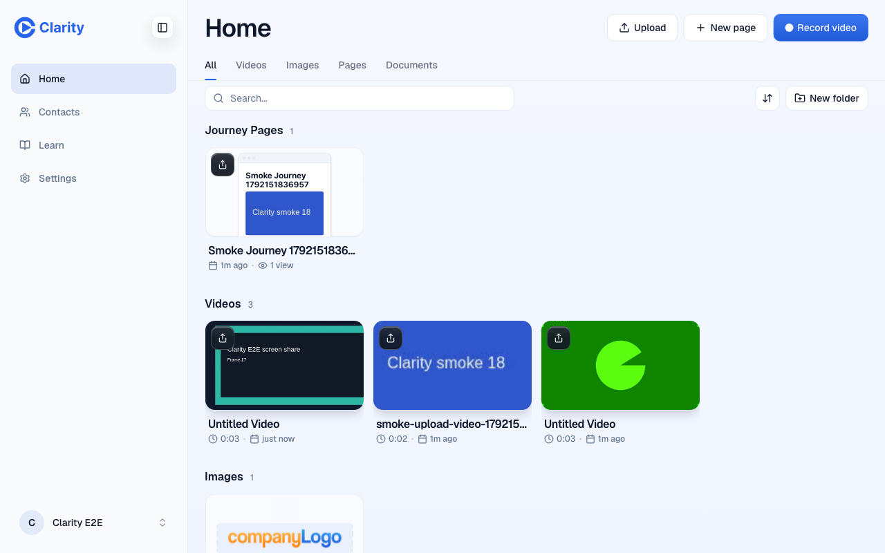
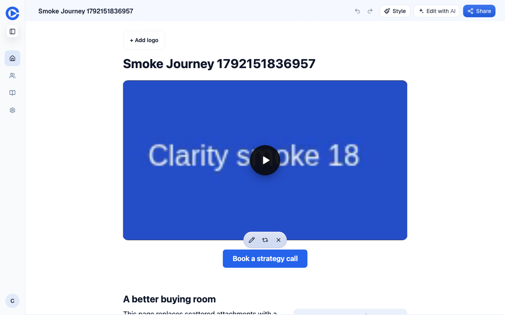
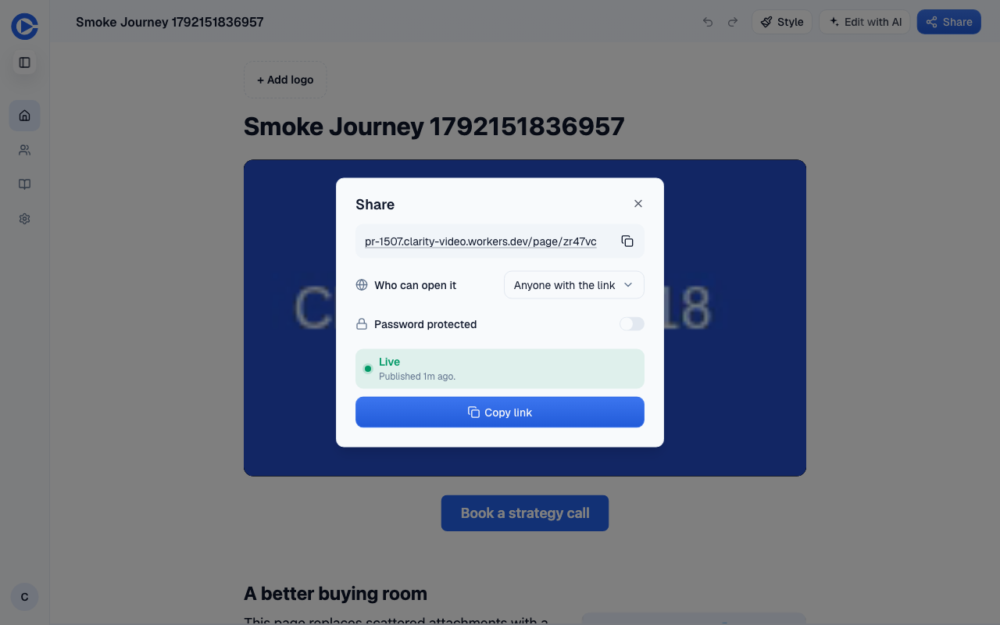
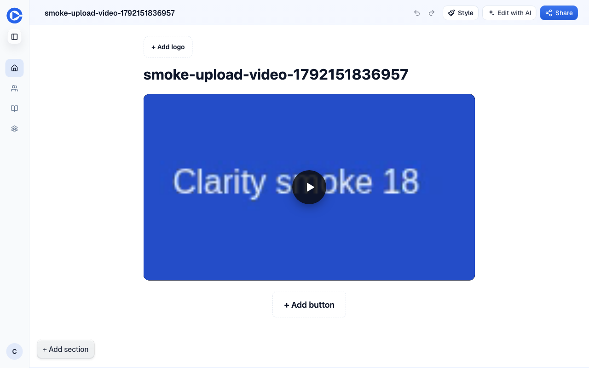
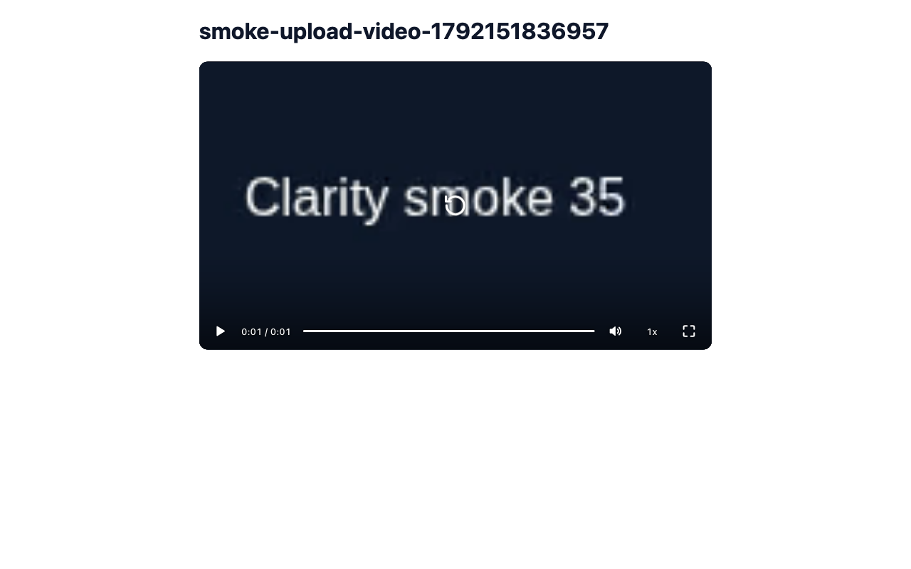
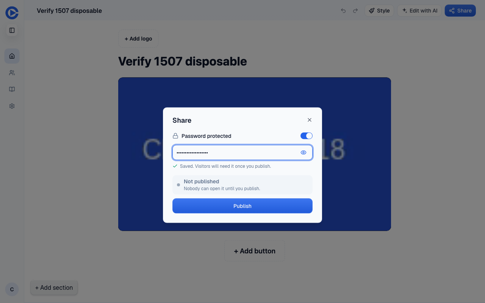
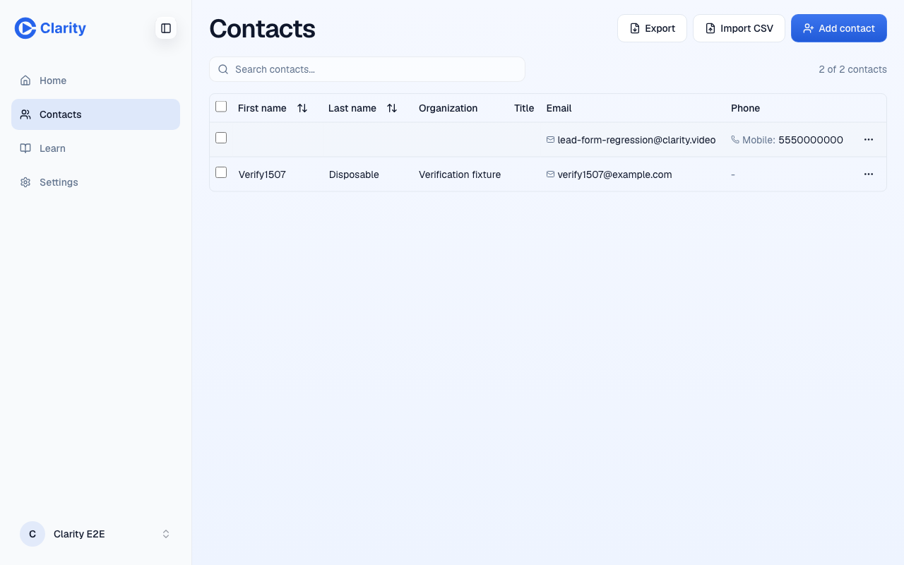
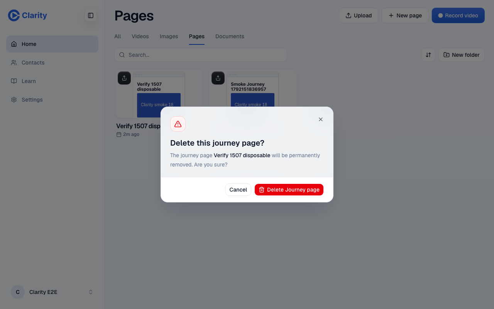
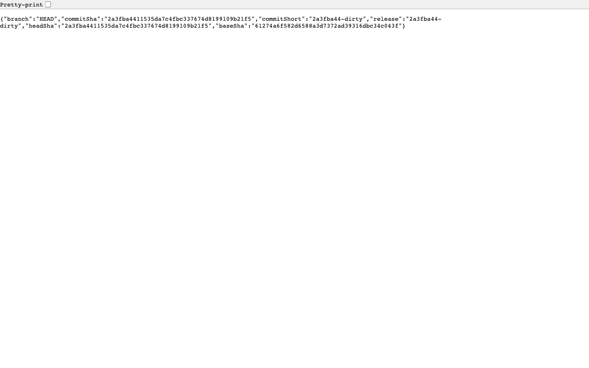

PR 1507 preview verification. 2026-10-16T12:10:39.485043+00:00
The exact requested deployment SHA did not match. The malformed active-route draft case also lacks preview runtime proof. Functional checks below passed where stated.
Target https://pr-1507.clarity-video.workers.dev
Served commit 2a3fba4411535da7c4fbc337674d8199109b21f5
Required merge 5a523a38786a8afee0ea36d3ee0ce2020bdb91d6
Both source trees f392e8e49f64ffeca7f069b46137eca100a368ab.
Independent test seat did not write the implementation. This run includes its own artifact audit; no second artifact reviewer ran. No code was pushed, no labels changed, no merge occurred, and no staging or production target was used.
| Check | Result | Evidence |
|---|---|---|
| Target SHA | FAIL | Serves head 2a3fba441… instead of required merge 5a523a387…. The source trees match. evidence line 1, evidence line 2, evidence line 3 |
| 1. Library, editor, share and video share | PASS | Rendered fixtures, opened Share, created a published video page and played it. Screenshots below; evidence line 15, evidence line 16. |
| 2. Foreign page answers 404 | PASS | 13 browser route/method combinations returned 404 with the missing-page body. Owner control returned 200; agent returned not_found. evidence line 5, evidence line 6, evidence line 7, evidence line 8. |
| 3. Agent read evals | PASS | 8/8 read evals passed on Opus MCP. evidence line 25, evidence line 26. |
| Draft share URL edge case | GAP | Fresh draft pages_get returned shareUrl null and library_list omitted shareUrl. This does not reproduce an active route without a publication. That case passed the focused unit test only. Preview D1 lookup failed with Cloudflare 10000. evidence line 9, evidence line 22. |
| 4. Delete page | PASS | Created a disposable page, deleted through the Library dialog, then re-fetched 404 and confirmed its card absent. evidence line 14. |
| 4. Contacts list and delete | PASS | Created a mock contact, observed it in the list, deleted through the dialog, and re-fetched its absence. evidence line 12, evidence line 13. |
| 4. Set page password | PASS | Saved through Share, re-fetched password_enabled true, published, and checked the anonymous gate. evidence line 10, evidence line 11. |
| Route coexistence and public smoke | PASS with flake | Four preview smoke cases passed. Coexistence failed once on ERR_ADDRESS_UNREACHABLE, then both cases passed. evidence line 18, evidence line 19. |
| Public intent regression | PASS with flake | Video and Journey Page fixtures passed at desktop and mobile widths. Journey fixture required one network retry. evidence line 20, evidence line 21. |
| Video ownership | PASS | Foreign browser stats returned 404; agent videos_get returned not_found. Owned video read and stats succeeded. evidence line 16, evidence line 17. |
| Authorization forwarding | N/A | These flows use cookie-authenticated /api paths. They did not call /editor/api/*. |
| Self audit | PASS with stated gap | All saved screenshots were inspected. Persistence claims use re-reads. Negative controls rejected 403, a dead draft link, a retained deleted row and zero playback time. The malformed draft runtime gap remains explicit. evidence line 23. |
No before-preview evidence was gathered. The foreign-page assertions require 404 and reject 403. A fresh draft is only a control, since it would also pass before this PR. The malformed active-route case has unit evidence, not a claimed runtime before/after.









Early GitHub, preview navigation, the Google PDF viewer and two Playwright navigations failed with network-unreachable errors. Retries recovered the required app flows. The PDF viewer failures remain an external network limitation. An unauthenticated MCP probe correctly returned 401. A malformed test POST sent JSON to the form-data contacts endpoint and got 500; the actual form-data request returned 201. An invalid library_list type and a retired stats URL were corrected before judging behavior.
The deploy log confirms Fast-forward, no commit created, at line 1174 and the built head at line 1214. WorkOS and preview checks passed on the first deploy. No product regression was confirmed.
Raw local logs and screenshots are in .context/verify-1507/. This public report contains mock screenshots and sanitized request evidence. Read the evidence or download JSONL.